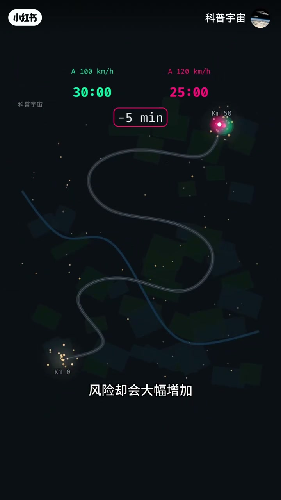
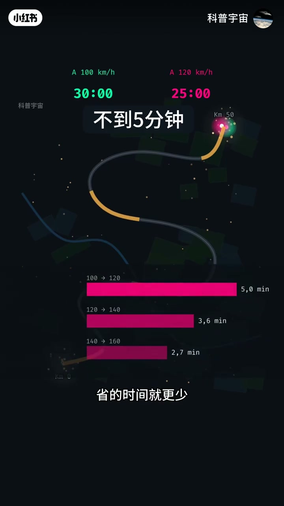
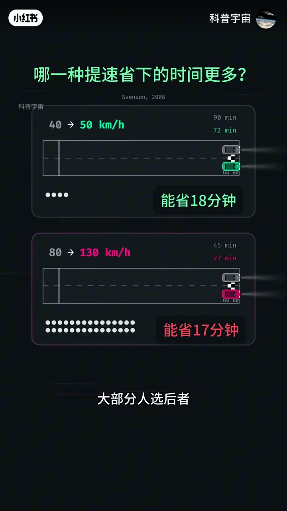
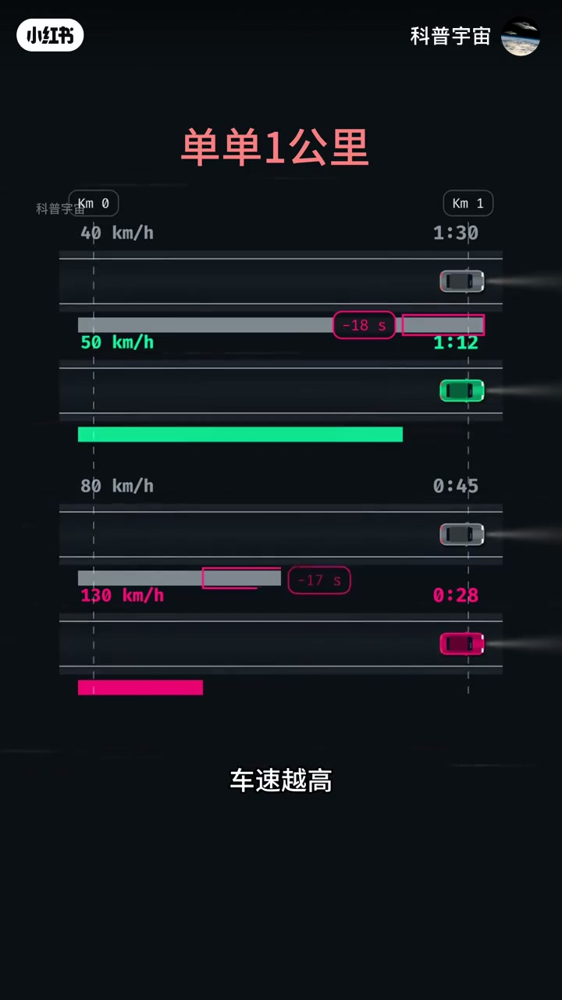
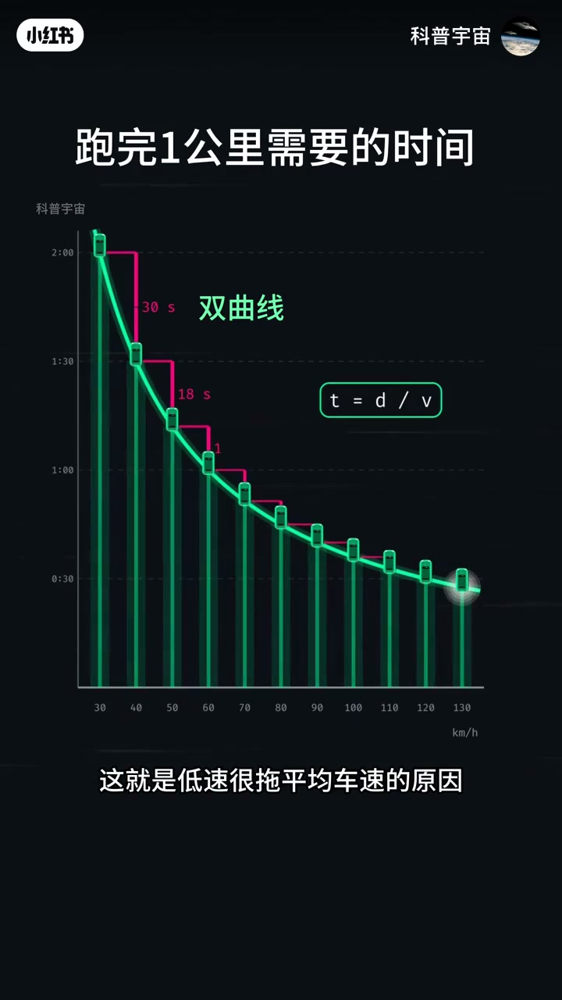
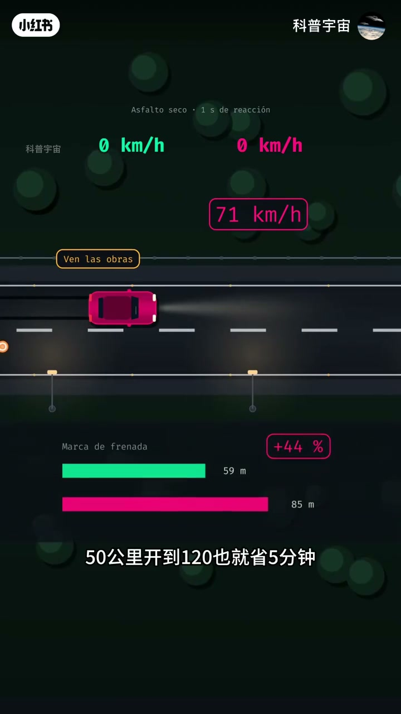

内容要点
这是一条 1 分 46 秒的竖屏图表。画面底图带西班牙文界面，中文是后加的字幕。它要说明的是：同一段路，速度已经不低时，再加快省下的时间会变少；低速那一段却会把平均车速拖住。刹车距离在后半段被画成另一条往上翘的曲线。
知识结构
100 km/h 的计时停在 30:00，120 km/h 停在 25:00，中间标 -5 min。正中大字却写成「不到5分钟」。同样加 20 km/h，条形图用欧洲小数逗号写成 5,0、3,6、2,7 分钟。
60 公里上，40 提到 50 标成能省 18 分钟，80 提到 130 标成能省 17 分钟。缩到 1 公里，对应的是 18 秒和 17 秒。角标写着 Svenson, 2008。这是画面上的引用，不是本文另找的论文结论。
1 公里耗时旁写着 t = d / v，并标成双曲线。30 到 40、40 到 50、50 到 60，省下的时间依次是 30 秒、18 秒、12 秒。去程 60、返程 40，表盘停在 48，不是 50。上坡只有 30 时，字幕说往返平均 60 现实做不到。
条件写着干燥沥青、1 秒反应。100 码那辆字幕说刚好刹住，120 码冲到障碍附近还有 70 多码。距离条是 59 m 和 85 m，差 +44%，字幕另说将近 45%。片尾把开头的 5 分钟再说一遍。
省下的时间看的是距离除以速度的差，不是速度本身加了多少。低速多耗的那一段，高速很难用同样的公里数补回来。刹车距离在这条片里被说成随车速平方变长，59 米和 85 米是演示读数，不是一次实地刹车记录。
00:00–00:15
50 公里：120 比 100 只少 5 分钟
开场是夜间俯视的双车道，粉车标 120 km/h，绿车标 100 km/h，两个计时都从 0:00 起跳。标题已经把判断放在最上面。底字幕先是「开车有个很反直觉的道理」，接着是「拼命开快车」，然后是「风险却会大幅增加」。Whisper 把前两句听成了一句繁体，风险这句完全没听到。
镜头换成一条弯路，两端写着 Km 0 和 Km 50。跑完以后，100 km/h 是 30:00，120 km/h 是 25:00，粉框里是 -5 min。按 50 公里去除以这两个速度，正好是 30 分钟和 25 分钟，和计时一致。可正中大字写成「不到5分钟」。两条说法都在画面上，本文不把「不到」改成「刚好」，也不把计时改成不足 5 分钟。

底字幕接着说「一段50公里的路开到120」，又补了一句「还要经过村镇」。村镇没有配单独的地图标注，只能看成对「全程都能开到 120」的限制，不能当成某条具体公路的描述。
同一段路上再往上加，画面拉出三根粉色横条，小数点用逗号：100 到 120 是 5,0 min，120 到 140 是 3,6 min，140 到 160 是 2,7 min。用 50 公里复算，这三档大约是 5.0、3.6、2.7 分钟，和逗号后的一位小数对得上。底字幕是「省的时间就更少」，「省」和「时间」之间没有「下」或「了」。

00:16–00:29
60 公里上，40 提到 50 还略多省一点
下一块的绿字问句是「哪一种提速省下的时间更多？」。两条跑道都标着 60 km。上栏 40 到 50，下栏 80 到 130。角上有一行小字 Svenson, 2008。视频没有念出这行字，也没有展开这篇文献讲了什么，这里只把它当成画面上的出处标记。
字幕先说「车速每往上加一点」「能够省下的时间就比上一次更少」，然后把选择摆出来：「同一段路从40提到50」「或是从80提到130」「大部分人选后者」。大约 00:28 的抽帧读到下一句「可实际上是前者」。精选这一张时，两栏的分钟数已经都在，底字幕仍停在「大部分人选后者」。

上栏可以整除：60 公里、40 km/h 是 90 分钟，50 km/h 是 72 分钟，少 18 分钟，和绿字一致。下栏 80 km/h 是 45 分钟。130 km/h 则是 60 除以 130 小时，约 27.7 分钟，比 45 分钟少约 17.3 分钟。结果条写成「能省17分钟」。有的帧把 130 那一档的用时画成 27 分钟，有的接近 28 分钟，都是取整，不是另一次测量。画面要观众接受的对比，是 18 分钟对 17 分钟：速度只加 10，省下的时间却不少于速度加 50。
00:30–00:45
缩到 1 公里，还是 18 秒对 17 秒
字幕说「拿1公里来看」，红标题变成「单单1公里」。四条跑道从 Km 0 拉到 Km 1。40 码的字幕是「要1分30秒」，计时 1:30，也就是 90 秒，1 公里除以 40 km/h 正好是这个数。50 码「只要1分12秒」，计时 1:12，两车之间的粉框是 -18 s。
80 码「用时45秒」，130 码「是28秒」。1 公里、130 km/h 约 27.7 秒，画面收成 28 秒。80 的 45 秒减去 28 秒是 17 秒，粉框写成 -17 s。底字幕在这一段后半是「再多提速」。速度加了 50 km/h，省下的秒数仍比低速那 10 km/h 少 1 秒。这和上一块的 18 分钟、17 分钟是同一组比例，只是距离从 60 公里收成 1 公里。

00:46–01:03
耗时是一条先陡后平的曲线
图的标题换成「跑完1公里需要的时间」。横轴从 30 到 130 km/h，纵轴是 0:30、1:00、1:30、2:00。绿色柱顶连成一条向下的线，旁边写着「双曲线」，公式框是 t = d / v。字幕把形状说全了：「车速和耗时的关系是一条双曲线」「一开始下降很快」「之后慢慢变平缓」「省下的时间依次变少」。
低速三段的阶梯标着 30 s、18 s、12 s，对应 30 到 40、40 到 50、50 到 60。按 1 公里复算：120 秒减 90 秒是 30 秒，90 减 72 是 18 秒，72 减 60 是 12 秒，和标数一致。高处的例子是「110提到120」「1公里甚至省不到3秒」。110 到 120，1 公里大约少 2.7 秒，确实不到 3 秒。01:02 的底字幕是「这就是低速很拖平均车速的原因」。Whisper 在 01:00 附近只剩下「这就是低速度的原因」，后半句是画面补上的。

01:04–01:18
往返平均不是把两个速度加起来除以二
字幕拆成「一段路开60」「一段开40」，画面写成去程时速 60、返程时速 40，西班牙文标签是 Ida a 60 和 Vuelta a 40。时间条上，40 那一段明显更长。底字幕直接给结论：「平均车速不是50 而是48」。表盘写着 Media，针停在 48。等长的两段路，平均速度是两次行程时间加总以后再去除总路程，也就是 2 除以（1/60 + 1/40），结果是 48，不是（60+40）/2 的 50。这和表盘一致，视频没有在画面上把这个分数写出来。
下一幕是一座坡。红字「上坡，时速30」，字幕「如果上坡只能开到30」「想要往返平均60」。速度表从 30 往上走，西班牙文出现 Bajada en 0 s，意思是下坡那一段被画成 0 秒。中文字幕接着说「现实根本做不到」，然后收成「提速省下来的时间越来越有限」。等距离时，30 和任何一个有限的返程速度，调和平均都到不了 60，因为 60 已经是 30 的两倍，另一段必须不花时间。画面用表针往上冲和「0 秒」来演这件事，没有给出坡长或实测车速。
01:20–01:46
省下的时间变平，刹车距离往上翘
两条曲线叠在同一张速度轴上，轴仍是 30 到 130。绿线标注「每公里耗时」，越来越平；红线标注「刹车距离」，越来越陡。字幕是「刹车距离却不一样」「它和车速平方成正比」。平方关系是这条片的说法，图上没有给出摩擦系数或公式推导。
然后回到夜间道路。顶上的小字是 Asfalto seco · 1 s de reacción，也就是干燥沥青、1 秒反应。黄标签 Ven las obras 指着前方的施工。中文字幕写成「两辆车同时看到施工（障碍）」，括号里的「障碍」是字幕自己加的。
「100码刚好刹住」出现时，绿色速度读数已经降得很低。下一句是「120码冲到障碍物附近还有70多码」。收束条的标题是 Marca de frenada：青绿条 59 m，粉色条 85 m，旁边 +44%。85 比 59 大约多 44%，字幕说「刹车距离多出将近45%」，和 +44% 是同一档取整，方向一致、字面不完全相同。粉框里还有一个 71 km/h，和「70多码」对得上，它是演示过程中的读数，不是单独一次测速。

底字幕把第一段的账再念一遍：「50公里开到120也就省5分钟」。这里用的是「5分钟」，不再写「不到」。最后几秒回到弯路和双曲线，字幕换成「时间收益越升越平缓」「制动风险却急剧上升」，然后是片尾两句：「车速每多一点」「能省下的时间就又少一点」。Whisper 听到的就是这两句，时间戳落在 01:30 到 01:34，和画面末尾对得上，但中间那一分多钟的图表它没有字。
笔记文案把两件事放在一起：省不了几分钟，刹车距离却会大幅变长。片内能对上的数字，是 50 公里少 5 分钟，以及演示里的 59 米对 85 米。村镇、施工和「现实根本做不到」都是这条片的限定，不是对所有道路的测量。